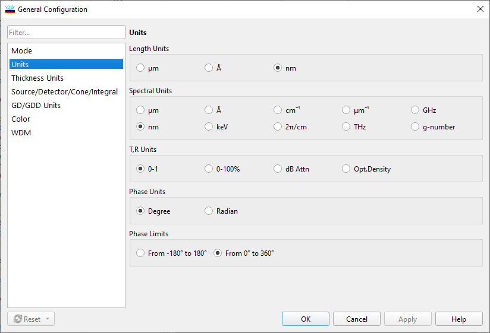

Thickness Units
Thickness Units
This Configuration Option allows you to choose between measuring layer thicknesses in physical or optical terms:
Optical Thickness is defined as the product of the physical thickness and the corresponding refractive index at a reference wavelength (see below). It is measured in the same units.
FWOT (Full Wave Optical Thickness) sets layer optical thickness measurement in values relative to the reference wavelength.
QWOT (Quarter Wave Optical Thickness) sets layer optical thickness measurement in values relative to a quarter of the reference wavelength.
If you select Optical Thickness, FWOT, or QWOT, you should also specify the reference wavelength (in metric units).

The Design Bar Display option allows you to select units for the Design Bar Display. Units can be the same as those selected in the upper box or can be configured independently. Please note that the unit setting is always QWOT for the Preview page of the Design Editor window and for the WDM filter synthesis dialog.